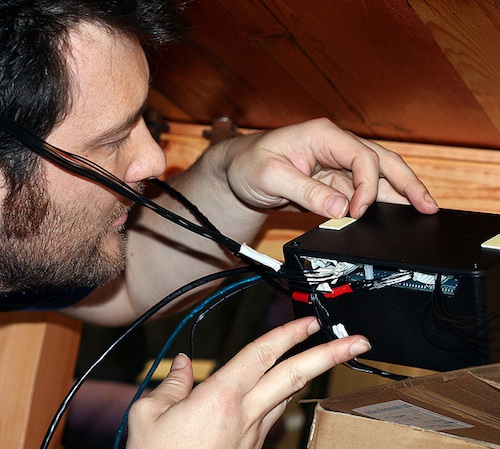
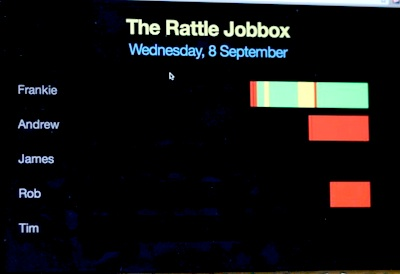
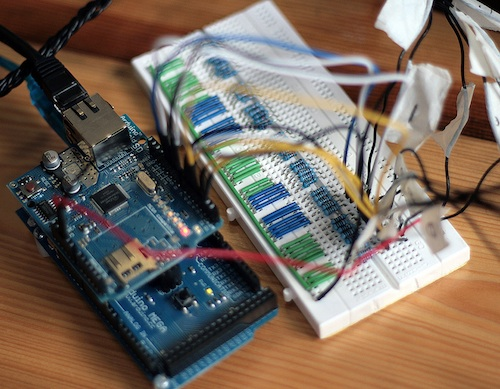

Job Box
- 
- 
- 
The Job Box was a project devised to give increased visibility of what everyone on the team was working on - a particular issue with remote workers.
Our solution was a set of 'job boxes', each of which featured a single knob which could be turned to one of 8 positions, representing the current projects that each person was working on.
A simple web visualisation used the data from the boxes to show a simple, live-updating colour-coded view of what the team was up to.
The boxes were used by the team for several months, and generated lots of interest.